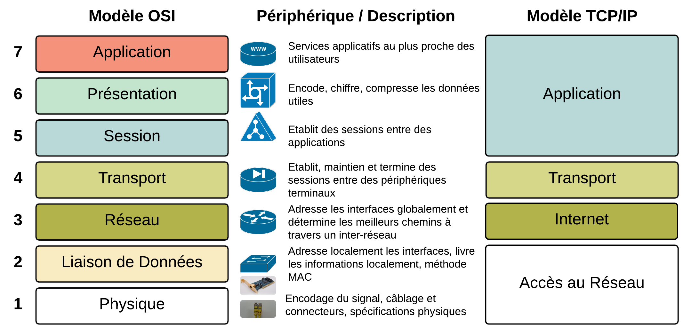
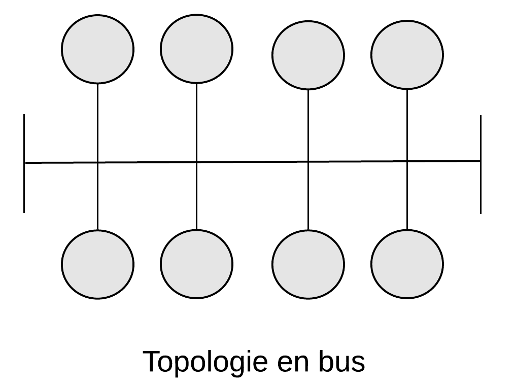
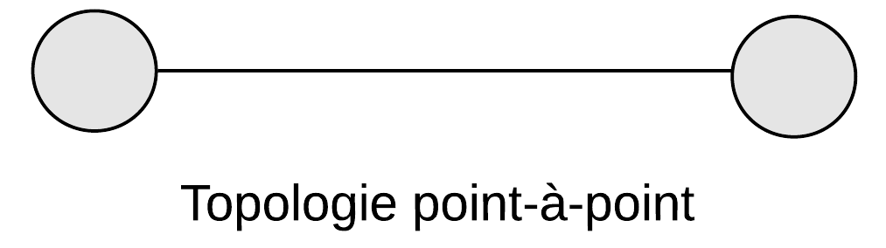
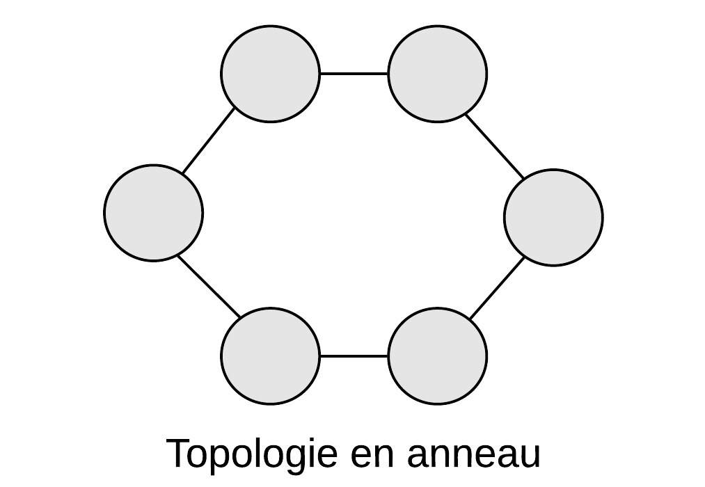
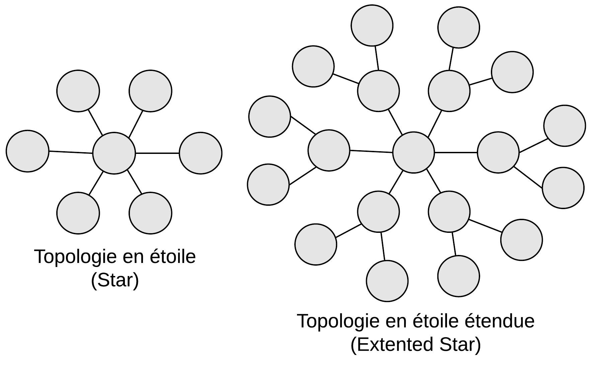
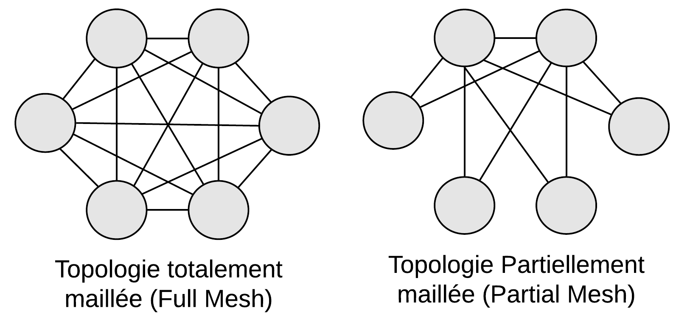

Réseaux :
Ce cours se base sur le site de Cisco Goffinet et de mes notes de cours.
Ce cours se base sur le site de Cisco Goffinet et de mes notes de cours.
Avant de parler de réseaux à proprement dit, il faut parler des différents systèmes de numérotation. Il existe plusieurs systèmes de numérotation :
Système décimal (base 10) : C'est le système de numérotation que nous utilisons couramment dans notre vie quotidienne. Il utilise dix chiffres, de 0 à 9, et repose sur des puissances de 10. Chaque position dans un nombre décimal représente une puissance de 10.
Système binaire (base 2) : C'est le système de numérotation fondamental utilisé en informatique et en électronique. Il utilise seulement deux chiffres, 0 et 1. Chaque position dans un nombre binaire représente une puissance de 2.
Système octal (base 8) : Ce système utilise huit chiffres, de 0 à 7. Chaque position dans un nombre octal représente une puissance de 8.
Système hexadécimal (base 16) : Ce système utilise seize chiffres, de 0 à 9, suivis des lettres A à F (représentant les valeurs 10 à 15). Il est couramment utilisé en informatique pour représenter des valeurs binaires de manière plus compacte. Chaque position dans un nombre hexadécimal représente une puissance de 16.
Il existe plusieurs méthodes mnémotecniques pour convertir entre binaire, décimal, octal et hexadécimal sans avoir à refaire de longs calculs à chaque fois.
Pour convertir les systèmes de numérotation entre eux, il faut utiliser diverses techniques de conversions décrites ci-dessous :
Faire des divisions entières par 2 du nombre décimal.
S'il y a un reste, reporter 1 à droite.
Lire le nombre binaire de bas en haut.
Avant de commencer cette conversion, il faut connaître les puissances de 2 car le format binaire est en base 2 :
20 = 1
21 = 2
22 = 4
23 = 8
24 = 16
25 = 32
26 = 64
27 = 128
28 = 256
29 = 512
210 = 1024
211 = 2048
212 = 4096
213 = 8192
214 = 16384
215 = 32768
216 = 65536
Ensuite, pour les calculs, 1 + 1 = 2 ou 1 + 1 = 10 selon le format.

Finalement, pour la conversion binaire vers décimal, il faut lire le nombre binaire de droite à gauche en commençant à 0.
Par exemple, voici les détails de la conversion de 100101012 en 14910 :
100101012
= 1 * 20 + 0 * 21 + 1 * 22 + 0 * 23 + 1 * 24 + 0 * 25 + 0 * 26 + 1 * 27
= 1 + 0 + 4 + 0 + 16 + 0 + 0 + 128
= 14910Méthode : les puissances de 2.
Chaque bit (de droite à gauche) vaut une puissance de 2 :
128 | 64 | 32 | 16 | 8 | 4 | 2 | 1Exemple : 10110110 = 128 + 32 + 16 + 4 + 2 = 182
Méthode mnémotechnique : pense à une "balance" où chaque case double la valeur de la précédente.
Pour cette conversion, il faut savoir compter en hexadécimal :
010 = 016
110 = 116
210 = 216
310 = 316
410 = 416
510 = 516
610 = 616
710 = 716
810 = 816
910 = 916
1010 = A16
1110 = B16
1210 = C16
1310 = D16
1410 = E16
1510 = F16

Faire une division euclidienne par 16 du nombre décimal.
Convertir le reste en hexadécimal (ex : 14 → E).
Poursuivre jusqu'à une solution inférieure à 16.
Lire de bas en haut.
Comme pour la conversion binaire vers décimal, il faut d'abord connaître les puissances de 16 car, cette fois-ci, le format hexadécimal est en base 16 :
160 = 1
161 = 16
162 = 256
163 = 4096
164 = 65536
165 = 1048576
166 = 16777216
167 = 268435456
168 = 4294967296
169 = 68719476736
1610 = 1099511627776
Finalement, il faut lire le chiffre hexadécimal de droite à gauche en commençant à 0.
Donc, voici les détails de la conversion de 153E16 en 543810 :
153E16
= 14 * 160 + 3 * 16 1 + 5 * 162 + 1 * 163
= 14 * 1 + 3 * 16 + 5 * 256 + 1 * 4096
= 543810Pour cette conversion, il faut préciser que chaque chiffre hexadécimal est égal à 4 chiffres binaires car 16 = 24.
Donc, on peut déduire que la conversion se fait selon le schéma suivant :
016 = 00002
116 = 00012
216 = 00102
316 = 00112
416 = 01002
516 = 01012
616 = 01102
716 = 01112
816 = 10002
916 = 10012
A16 = 10102
B16 = 10112
C16 = 11002
D16 = 11012
E16 = 11102
F16 = 11112
Donc, pour la conversion de 39D16 en 0011100111012, on remplace chaque chiffre hexadécimal par son équivalent binaire (en 4 chiffres).
On peut également supprimer les 0 en début de nombre et dire que la conversion de 39D16 devienne ainsi 11100111012.
Pour cette conversion, on doit regrouper les chiffres binaires en groupe de 4 (en commençant par la fin du nombre, c'est-dire lire le nombre de droite à gauche) et remplacer chaque groupe de 4 chiffres binaires par son équivalent hexadécimal.
Donc, la conversion de 10100100100011002 en hexadécimal devient 148C16.
Finalement, si le nombre binaire ne possède pas de multiple de 4 chiffres, il faut rajouter des 0 supplémentaires jusqu'à avoir un multiple de 4 chiffres.
Pour l'exemple, 11100110112 ne possède pas un multiple de 4 chiffres et doit se transformer en 0011100110112 avant de se convertir en hexadécimal. Le résultat final est 39B16.
C'est plus ou moins la même technique que la conversion binaire vers hexadécimale sauf que ce n'est pas des groupes de 4 chiffres mais de 3 chiffres car 23 = 8 (Petit rappel : l'octal est en base 8).
Méthode : groupes de 4 bits.
1 chiffre hexadécimal = 4 bits.
Tu regroupes ton binaire par paquets de 4.
Exemple : 1011 1100 → BC en hexa.
Astuce mnémotechnique : "Hexa ɒ quatre", car chaque chiffre = 4 bits.
C'est plus ou moins la même technique que la conversion décimale vers hexadécimale sauf qu'au lieu de diviser par 16 on divise par 8.
C'est plus ou moins la même technique que la conversion hexadécimale vers binaire mais, cette fois-ci, en utilisant le schéma suivant :
08 = 0002
18 = 0012
28 = 0102
38 = 0112
48 = 1002
58 = 1012
68 = 1102
78 = 1112
Méthode : groupes de 3 bits.
1 chiffre octal = 3 bits.
Tu regroupes ton binaire par paquets de 3 (en partant de la droite).
Exemple : 110 101 → 65 en octal
Astuce mnémotechnique : "octal → O comme trois", car chaque chiffre octal = 3 bits.
Pour convertir de hexadécimal à octal et vice versa, il faut soit passer par le binaire ou le décimal en intermédiaire.
Un bit est un chiffre binaire. Un byte (ou un octet en français) est la plus petite unité adressable qui est composée de 8 bits.
Un byte peut représenter 256 valeurs distinctes (28), allant de 0 à 255. Ils sont souvent utilisés pour stocker des caractères, des nombres et d'autres données dans les systèmes informatiques.
Pas besoin de passer par le décimal.
Octal ↔ Binaire (par 3 bits).
Hexadécimal ↔ Binaire (par 4 bits).
→ Tu passes toujours par le binaire comme pont.
Exemple : 300
En binaire : puissances 2 proches de 300 :
28 = 256 → 1 (reste = 44)
27 = 128 → 0
26 = 64 → 0
25 = 32 → 1 (reste = 12)
24 = 16 → 0
23 = 8 → 1 (reste = 4)
22 = 4 → 1 (reste = 0)
→ 300 = 1001011002En octal : on regroupe les bits par 3 :
1001011002 → 101 100 → 454
→ 300 = 4548En hexadécimal : on regroupe par 4 bits :
100101100 → 1 0010 1100 → 12C
→ 300 = 12C16PEMDAS est l'abréviation de "Parenthèse Exposants, Multiplication/Division, Addition/Soustraction".
On effectue la somme binaire, bit par bit, avec report éventuel. On travaille sur un nombre de bits fixés.
Exemple :

Note : Attention, si la somme donne lieu à un dépassement de capacité, celui-ci donnera un nombre négatif. Le résultat sera faux et le processeur ne détectera pas l'erreur.
La première idée pour représenter les nombres négatifs était de réserver un bit pour le signe en début de nombre. Cependant, cela causait un problème lors des additions d'un entier positif avec un négatif car le résultat donnait le négatif de la somme des valeurs absolues des deux termes. Pour palier à ça, on utilise le complément à 2 qui consiste à :
Nombre binaire positif.
Inversion des bits de ce nombre (complément à 1).
On ajoute 1 (on ignore le dépassement de capacité éventuel).
Pour lire un nombre négatif, on fait l'opération inverse :
Inversion des bits de ce nombre (complément à 1).
On ajoute 1 (on ignore le dépassement de capacité éventuel).
Note : L'étendue des entiers signés sur n bits est [-2n-1; 2n-1 - 1] et celle des entiers non-signés [0; 2n - 1].
Pour soustraire deux nombres binaires, on utilise le complément à deux du nombre à soustraire qu'on additionne ensuite au premier terme.
La multiplication d'un nombre binaire est réalisée par une suite de sommes. On peut cependant passer par un simple décalage n bits vers la gauche lorsqu'on multiplie par une puissance n de 2.
La division d'un nombre binaire est réalisée par une suite de soustractions.
Exemple :

On continue la division jusqu'à ce que le reste soit nul ou que le quotient ait atteint la limite maximum autorisée par le nombre de bits alloué. Si on divise par une puissance n de 2, on peut passer par un simple décalage de n bits vers la droite (on a alors n nombres derrières la virgule, si les ner nombres ne sont pas égaux à 0).
Les adresses IPv4 et le masque de sous-réseau sont composés de 4 octets (1 octet = 8 bits) dont chacun ne peut dépasser 255 et être inférieur à 0. Par exemple, 192.16.3.1 est une adresse IPv4.
Une adresse IPv6 est représentée sur 128 bits organisés en 8 mots de 16 bits. Par exemple, fe80::2d1:81ff:fe41:d200 est une adresse IPv6.
L'adresse MAC est représentée sur 48 bits, c'est-à-dire en 6 octets ou en 12 chiffres hexadécimaux. Par exemple, 00:d1:81:41:d2:00 est une adresse MAC.
Le CIDR (Classless Inter-Domain Routing) est utilisé pour fusionner les routes afin de réduire les informations de routage transportées par les routeurs principaux. Au contraire, le VLSM (Variable Length Subnet Mask) permet d'optimiser l'espace d'adressage disponible.
CIDR est l'opposé de VLSM, où il décrit les règles pour référencer un ensemble de réseaux avec une seule déclaration de route. À l'inverse, le VLSM définit des règles pour subdiviser les réseaux.
| Classe | Préfixe d'adresse | Nombre de bits | Masques réseau | ||
|---|---|---|---|---|---|
| Bits | 1er octet | Réseau | Machines | ||
| A | 0 | 0-127 | 8 | 24 | 255.0.0.0 |
| B | 10 | 128-191 | 16 | 16 | 255.255.0.0 |
| C | 110 | 192-223 | 24 | 8 | 255.255.255.0 |
| D | 1110 | 224-239 | - | - | - |
| E | 1111 | 240-255 | - | - | - |
Utilisez le masque de sous-réseau à longueur variable (VLSM) pour une utilisation plus efficace des adresses IP attribuées et pour réduire la quantité d'informations de routage au niveau supérieur.
Exemple : 192.168.1.7
11000000.10101000.00000001.00000111Pour calculer les sous-réseaux VLSM et les hôtes respectifs, allouez d'abord les besoins les plus importants à partir de la plage d'adresses. Les niveaux de besoins doivent être listés du plus grand au plus petit.
Exemple : Une adresse de classe C de 192.168.10.0/24 a été attribuée. Liège, Namur et Anvers disposent d'une connexion WAN vers Bruxelles.
Bruxelles a besoin de 60 hôtes.
Liège a besoin de 28 hôtes.
Namur et Anvers ont chacun besoin de 12 hôtes.
Dans cet exemple, Bruxelles requiert 60 hôtes. Utilisez 6 bits puisque 26 - 2 = 62 adresses d'hôtes utilisables. Ainsi, 2 bits seront utilisés dans le 4ème octet pour représenter le préfixe de réseau étendu de /26 et les 6 bits restants seront utilisés pour les adresses d'hôtes.
| Adresse allouée | Sous-réseaux | 62 hosts utilisables/subnet# | Broadcast |
|---|---|---|---|
| 192.168.10.0/24 | 192.168.10.0/26 | 192.168.10.1/26 à 192.168.10.62/26 | 192.168.10.63/26 |
| 192.168.10.64/26 | 192.168.10.65/26 à 192.168.10.126/26 | 192.168.10.127/26 | |
| 192.168.10.128/26 | 192.168.10.129/26 à 192.168.10.190/26 | 192.168.10.191/26 | |
| ... | ... | ... |
L'adresse disponible suivante après 192.168.10.63/26 est 192.168.10.64/26.
Notez dans le tableau ci-dessus qu'il s'agit du sous-réseau numéro 1. Puisque 28 hôtes sont nécessaires pour Liège, 5 bits seront nécessaires pour les adresses d'hôtes, 25 - 2 = 30 adresses d'hôtes utilisables. Ainsi, 5 bits seront nécessaires pour représenter les hôtes et 3 bits seront utilisés pour représenter le préfixe de réseau étendu de /27.
L'application du VLSM sur l'adresse 192.168.10.64/27 donne :
| Sous-réseaux#1 | Sous-réseaux | 30 hosts utilisables/subnet# | Broadcast |
|---|---|---|---|
| 192.168.10.64/26 | 192.168.10.64/27 | 192.168.10.65/27 à 192.168.10.94/27 | 192.168.10.95/27 |
| 192.168.10.96/27 | 192.168.10.97/27 à 192.168.10.126/27 | 192.168.10.127/27 | |
| 192.168.10.128/27 | 192.168.10.129/27 à 192.168.10.158/27 | 192.168.10.159/27 | |
| ... | ... | ... |
En IPv4, on distingue des types d'adresses particuliers, répertoriés dans la RFC (Request For Commit) 3330. Les principales singularités :
la RFC 1918 définit les adresses suivantes comme privées :
10.0.0.0/8 → 10.0.0.0 à 10.255.255.255
172.16.0.0/12 → 172.16.0.0 à 172.31.255.255
192.168.0.0/16 → 192.168.0.0 à 192.168.255.255
les adresses Ethernet sont réservées
la boucle locale : interface lo
127.0.0.0/8 (on se contente souvent de définir 127.0.0.1)
Lien local, adresses utilisées dans des phases d'autoconfiguration :
169.254.0.0/16
adresses de multicast :
224.0.0.0/4
Il existe deux méthodes d'attribution de l'adresse IP à une machine sur un réseau :
adresse statique : l'adresse IP est configurée en dur dans le système, et directement attribuée à l'interface par l'OS (au boot, par exemple)
adresse dynamique : l'adresse IP à attribuer à l'interface est à priori inconnue du système; une requête DHCP est émise sur le réseau, et le serveur y répond avec une adresse IP pouvant être utilisée par la machine
Cas particulier : Sous Windows, lorsqu'une interface configurée pour utiliser DHCP ne reçoit aucune réponse, ou qu'elle est configurée en "automatique", une adresse du réseau 192.254.0.0/16 lui est assignée.
Le protocole DHCP a pour but de permettre à une machine sans adresse IP de récupérer une configuration réseau : RFC 2131. Il se base sur UDP. Les ports utilisés sont le 67 côté client et le 68 côté serveur.
le client émet une requête (DHCP Discover) pour trouver un serveur; son adresse source est nulle : 0.0.0.0
le serveur répond (DHCP Offer) avec une adresse pouvant être utilisée par le client
le client renvoie une requête (DHCP Request) au serveur qu'il a choisi pour compléter sa configuration
le serveur répond (DHCP Ack)
C'est une architecture centralisée.
Un serveur met à disposition une ressource (données, service) la ressource n'est pas nécessairement disponible sur un unique serveur : notions de redondance et d'équilibrage de charge.
Les clients voulant utiliser cette ressource en font la demande au serveur.
Les VLANs (Virtual LANs) permettent de créer des réseaux logiques indépendants au sein d'un même réseau physique.
Un modèle de communication en couches organise les communications entre les hôtes sous forme d'enveloppement hiérarchique. Chaque couche remplit une fonction spécifique à la communication et dispose de caractéristiques propres. Chaque couche utilise un protocole, soit un ensemble de règles de communication.
Le modèle OSI (Open Systems Interconnection) permet à divers systèmes de communiquer à l'aide de protocoles standard. La modélisation OSI propose un enveloppement en 7 couches désignées par leur numéro (Application, Présentation, Session, Transport, Réseau, Liaison de données et Physique). On associera à chaque couche des rôles, des protocoles et du matériel.
Le PDU est le nom donné à l'encapsulation correspondante à une couche. Quand la couche est enveloppée dans la couche sous-jacente, on parle alors d'encapsulation.
Le modèle TCP/IP est fondé sur quatre couches (Application, Transport, Internet et Accès réseau) qui enveloppent les messages originaux avant qu'ils soient placés sur le support physique sous forme d'ondes représentant les données de la communication.
Chaque couche assure une fonction de maintenance et de service de la communication. TCP/IP ne se préoccupe pas du contenu (les propos tenus par les utilisateurs dans les messages); il se contente d'assurer des fonctions qui facilitent les communications, le partage et la diffusion des informations.
Voici le schéma de comparaison des deux modèles :
On utilisera principalement le modèle TCP/IP pour expliquer les communications au niveau logique. Le modèle OSI n'a plus d'intérêt que dans sa distinction entre la couche 1 et la couche 2 au niveau de la couche d'accès réseau.
Les machines et leurs interfaces disposent d'identifiants au niveau de chaque couche.
| Couche | Identifiant | Exemple |
|---|---|---|
| Couche Application | Un protocole et un nom de domaine | http:// suivi de www.cisco.com |
| Couche Transport | Port TCP ou UDP | TCP 80 comme port par défaut pour HTTP |
| Couche Internet | Adresse IPv4 et/ou IPv6 | 192.168.150.252/24 ou 2001:db8::1/64 |
| Couche Accès réseau | Adresse physique (MAC 802) | 70:56:81:bf:7c:37 |
Voici le tableau récapitulatif de la différence entre le modèle OSI et le modèle TCP/IP :
| TCP/IP | OSI | Rôles | PDU | Protocoles | Matériel |
|---|---|---|---|---|---|
| Application | 7 Application | Services au plus proche des utilisateurs | Données | HTTP, DNS, DHCP | Ordinateurs |
| Application | 6 Présentation | Encode, chiffre, compresse les données utiles | idem | idem | idem |
| Application | 5 Session | Établit des sessions entre des applications | idem | idem | idem |
| Transport | 4 Transport | Établit, maintient, termine des sessions entre des hôtes d'extrémité | Segment | TCP ou UDP | Ordinateurs, routeurs NAT, pare-feux |
| Internet | 3 Réseau | Identifie les hôtes et assure leur connectivité | Datagramme ou paquet | IPv4 ou IPv6 | Routeurs |
| Accès réseau | 2 Liaison de données | Détermine la méthode d'accès au support, organise les bits de données | Trame | Ethernet IEEE 802.3, Wi-Fi IEEE 802.11, pontage 802.1 | Commutateurs (switchs), cartes d'interface réseau |
| Accès réseau | 1 Physique | S'occupe du placement physique du signal | Bits | Normes physiques : xDSL (WAN), 1000-BASE-TX | Câblage (UTP CAT 6) et connecteurs (RJ-45), bande de fréquences (2.4 GHz, 5 GHz) |
Les éléments clés à retenir sur le modèle TCP/IP sont les suivants :
le principe et la portée du modèle TCP/IP
le numéro de chaque couche (OSI), et ses protocoles, procédures, principes, matériels et PDU associés
les principes d'adressage, identifiants et matériel au niveau des couches d'Accès réseau, Internet et Transport
être capable d'interpréter sommairement une capture de trafic sur base des quatre couche du modèle TCP/IP
Dès que l'on est en mesure d'identifier les composants du réseau et leur rôle fondamental, on peut concevoir des topologies du réseau.
Une topologie indique les chemins possibles que les informations peuvent prendre lors d'une communication d'un hôte terminal d'origine à un hôte terminal de destination.
Dans une topologie en bus, un seul canal est partagé par des points multiples. Une rupture de connexion empêcherait tout point de communiquer avec l'autre.
Dans une topologie point-à-point, la seule destination est l'autre point. La ligne est un point unique de défaillance (single point of failure, soit un point d'un système informatique dont le reste du système est dépendant et dont une panne entraîne l'arrêt complet du système).
Dans une topologie en anneau, la rupture d'une liaison n'empêchera aucun point de communiquer avec l'autre.
Dans une simple topologie en étoile, le point de concentration est un point unique de défaillance. Selon l'endroit d'une rupture dans une topologie en étoile étendue, une partie des noeuds seront isolés les uns par rapport aux autres noeuds.
Dans une topologie maillée, tous les noeuds sont interconnectés entre eux de telle sorte que les communications peuvent résister à des ruptures multiples. La redondance est maximale. Chaque noeud ajouté augmente de manière exponentielle le nombre de liaisons pour assurer le maillage.
Connexions d'une topologie maillée = (n * (n - 1)) / 2
Dans une topologie partiellement maillée, chaque noeud d'extrémité se connecte à n + 1 points de concentration. Une topologie partiellement maillée est une topologie commune dans les architectures du réseau.